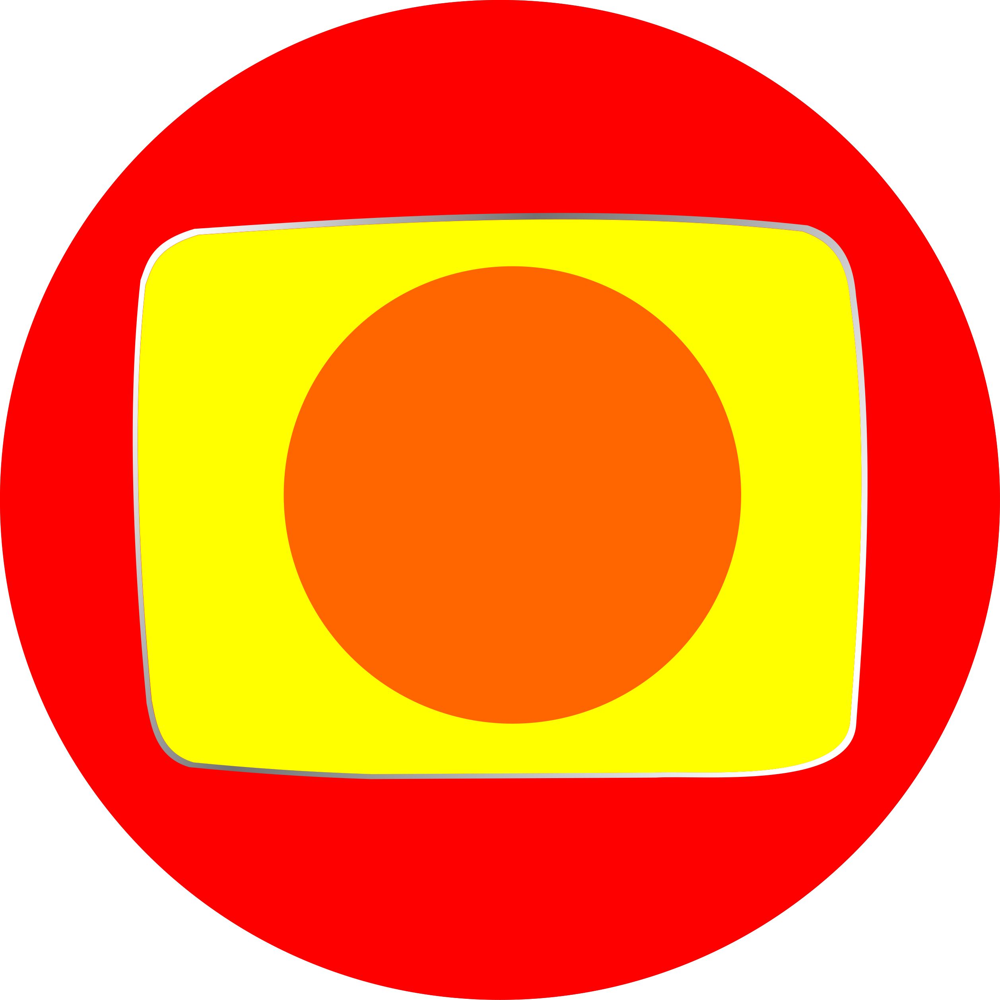

<div class="flex h-screen w-full bg-[#121212]">
  
  <aside class="w-20 flex flex-col items-center py-8 border-r border-white/5 bg-[#121212] z-50">
    
    <div class="mb-10">
      <button (click)="toggleAiStatus()" 
              class="transition-all duration-300 transform hover:scale-110 focus:outline-none group relative"
              [title]="isAiActive ? 'IA Ativa (Clique para pausar)' : 'IA Pausada (Clique para ativar)'">
        
        <i class="fas fa-bolt text-2xl transition-all duration-300"
           [ngClass]="isAiActive ? 'text-[#F47F20] drop-shadow-[0_0_8px_rgba(244,127,32,0.8)]' : 'text-gray-600'">
        </i>

        <span class="absolute left-full top-1/2 -translate-y-1/2 ml-3 bg-[#1E1E1E] border border-white/10 text-xs text-white px-2 py-1 rounded opacity-0 group-hover:opacity-100 transition-opacity whitespace-nowrap pointer-events-none z-50">
           {{ isAiActive ? 'IA: ON' : 'IA: OFF' }}
        </span>

      </button>
    </div>

    <nav class="flex-1 flex flex-col gap-6 w-full">
      <a routerLink="/monitor" routerLinkActive="nav-active" class="h-12 w-full flex items-center justify-center text-gray-500 hover:text-white transition group relative">
        <i class="fas fa-broadcast-tower text-xl"></i>
        <span class="absolute left-16 bg-[#1E1E1E] text-xs px-2 py-1 rounded border border-white/10 opacity-0 group-hover:opacity-100 transition-opacity whitespace-nowrap z-50">Monitoramento</span>
      </a>
      <a routerLink="/dashboard" routerLinkActive="nav-active" class="h-12 w-full flex items-center justify-center text-gray-500 hover:text-white transition group relative">
        <i class="fas fa-chart-pie text-xl"></i>
        <span class="absolute left-16 bg-[#1E1E1E] text-xs px-2 py-1 rounded border border-white/10 opacity-0 group-hover:opacity-100 transition-opacity whitespace-nowrap z-50">Dashboard</span>
      </a>
      <a routerLink="/historico" routerLinkActive="nav-active" class="h-12 w-full flex items-center justify-center text-gray-500 hover:text-white transition group relative">
        <i class="fas fa-history text-xl"></i>
        <span class="absolute left-16 bg-[#1E1E1E] text-xs px-2 py-1 rounded border border-white/10 opacity-0 group-hover:opacity-100 transition-opacity whitespace-nowrap z-50">Histórico</span>
      </a>
    </nav>

    <div class="mt-auto cursor-pointer group relative">
      <div class="absolute -inset-1 bg-gradient-to-r from-[#F47F20] to-[#E91E63] rounded-full blur opacity-0 group-hover:opacity-30 transition duration-500"></div>
      <div class="w-10 h-10 rounded-full bg-white flex items-center justify-center overflow-hidden border-2 border-transparent group-hover:border-white/10 transition-all relative z-10 shadow-lg">
        
      </div>
    </div>
  </aside>

  <main class="flex-1 relative overflow-hidden">
    <div class="absolute top-[-20%] left-[20%] w-[500px] h-[500px] bg-purple-900/10 rounded-full blur-[120px] pointer-events-none"></div>
    <div class="absolute bottom-[-10%] right-[10%] w-[400px] h-[400px] bg-orange-900/10 rounded-full blur-[100px] pointer-events-none"></div>

    <router-outlet></router-outlet>
  </main>
</div>

<app-toast></app-toast>